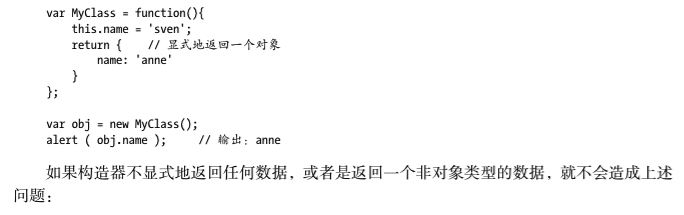

[JS]JavaScript中的this
前言
在学习JavaScript的过程中，我们会遇到很多经典的学习的问题，比如闭包，面向对象等等，当然还有一个比较经典的问题就是this的指向，以及函数默认的call和apply方法。这些问题，从我们开始接触JavaScript开始就会有看到很多专门的文章讨论这些问题，目前为止，关于闭包和面向对象，我还需要再收集一些素材做完整的总结，而关于this方面的文章已经看了很多了，基本对于this的常见情况已经能够掌握了，所以这里先就JavaScript中的this做一个简单的总结。
关于this的参考资料
在写这篇文章之前，其实会有很多的文章或者视频教程专门讲解this，我也是通过这些资料逐渐对this建立起这个系统的认识的。因此，先将这些文章罗列在这里，然后再具体讲解我对于this的理解。这样的话，大家如果对于我的说法有不理解或者感觉不是很清楚的可以直接参考我的思考的来源，便于大家更深刻地理解this。
- 《JavaScript设计模式与开发实践》（曾探），P24~P28。
- 慕课网视频，JavaScript深入浅出，第6章，第3节
- http://www.imooc.com/video/9820, 第11分钟的时候会对this的一种情况作了详细说明，尤其是调用setTimeout的时候使用的是window.setTimeout这种写法。
- “Professional JavaScript for Web Developers(3rd edition)”
- Chapter 5: Reference Type / The Function Type / Function Internals, P142。
- Chapter 7: Function Expressions / Closure / The this Object, P225。
其实还会有很多文章探讨this，但是基本上认真阅读上面几篇文章几乎就可以对this有一个比较深刻而且全面的理解了。后续我找到相关的文章还会继续添加到上面的列表中。
Professional JavaScript for Web Developers(3rd edition)
上面这段话其实点明了this的本质就是，指向函数执行时候的作用域对象，翻译一下：
另外一个特殊的对象就是this，它和Java、C#中的this类似，但是并不完全相同。this指向函数执行时候的上下文对象——通常也被称作this值（当一个函数在网页的全局作用域中被调用时，this指向window）。思考一下下面这段代码：
window.color = "red";
var o = {color: "blue"};
function sayColor(){
alert(this.color)
}
sayColor(); //red
o.sayColor = sayColor();
o.sayColor(); //blue
sayColor函数在全局中被定义，但是引用了this对象。在函数被调用前，this的值是无法决定的，所以this
的值在整个代码运行的过程中并不会完全保持一致。当sayColor()在全局作用域中被调用的时候，它输
出”red”，因为this指向了window，这意味着this.color就等于window.color。通过把函数指定给对象
o，然后再调用sayColor()，this对象就会指向o，所以this.color等于o.color，显示的就是”blue”。记住，函数名称仅仅是包涵指针的变量，所以全局sayColor()函数和o.sayColor()函数指向的是同一个函数，即使他们在不同的上下文中执行的。
上面这段话主要说明了当this处于闭包中，这个特殊状态时候的具体情况：
在闭包中使用this对象，将会导致一些复杂的问题。XXXXX：当在全局函数中被使用时，非严格模式下，this等于window；而严格模式下，this为undefined，因此当函数被当做对象方法调用时，this等于该对象。在这种上下文中，匿名函数不属于任何一个对象，意味着this对象指向window，除非在严格模式下执行（这种情况下this就是undefined）。然而，由于闭包的特殊写法，真相并非那么明显。思考一下下面这段代码：
var name = "The Window";
var object = {
name: "My Object",
getNameFunc: function(){
return function() {
return this.name;
};
}
};
alert(object.getNameFunc()()); //"The Window"(in no-strict mode)
这里，一个名为name的全局变量，和一个包含name属性的对象同时在全局中被创建出来。这个对象包含一个方法，getNameFunc()，这个方法返回一个匿名函数，这个匿名函数返回this.name。由于getNameFunc()返回一个函数，因此执行object.getNameFunc()()将会立即调用返回的函数，这个函数返回一个字符串。然后，在这种情况下，它返回的会”The Window”，全局变量name的值。为什么匿名函数没有选择包含它的作用域的this对象呢？
记住，每个函数只有当被调用的时候才会自动获得两个特殊的变量：this和arguments。内部函数用于无法直接从外部函数获取这两个特殊变量。通过把外部函数的this对象存储到一个闭包可以访问到的变量中，进而允许变量访问this对象的方式是可行的，就像这个例子中一样：
var name = "The Window";
var object = {
name: "My Object",
getNameFunc: function() {
var that = this;
return function() {
return that.name;
};
}
};
alert(object.getNameFunc()()); //"My Object"
被强调的两行代码展示了本例和上一个例子的不同之处。在匿名函数被定义之前，一个名为that的变量被指定等于外部函数的this对象。当闭包被定义时，它能够访问到that，因为它是外部函数的一个独特的命名对象。即使函数被返回之后，that依然指向object，所以调用object.getNameFunc()()返回“My Object”。
this和arguments都以这种方式行动。如果你希望访问到外部函数作用域的arguments对象，你需要将指针保存一个闭包可以访问的到的其他的变量中。
还有一些情况下，this也许并不会按照你所期望的那样出现。思考一下下面这段对上面例子的修改：
var name = "The Window";
var object = {
name: "My Object",
getName: function() {
return this.name;
}
};
getName()方法只是返回了this.name的值，下面是不同的调用getName()的方式以及调用后产生的结果：
object.getName(); //"My Object"
(object.getName)(); //"My Object"
(object.getName = object.getName)(); //"The Window" 在非严格模式下
第一行以常见的方式调用object.getName()，所以它返回的是“My Object”，因为this.name就等于object.name。第二行在调用object.getName()之前将其放入一对括号中。这似乎仅仅看上去像是对函数的引用，因此，this值被保留，因为object.getName和(object.getName)的定义是一样的。第三行执行了一次指认，然后调用结果。因为指认表达式的值就是函数自己，所以this值被保留，返回的就是“The Window”。
特意去使用第二行或者第三行的代码的情况似乎很少出现，但是这对于，当语法发生变化时，this的值可能会按照预想不到的方式变化的理解很有帮助。

设计模式这本书中主要指明了this在实际中可能会应用到的4种方式，以及在实际中容易出现问题的地方。
steam的总结
其实this主要的问题就是当有=号的时候，也就是出现异步情况的时候。调用函数的对象会发生变化，这个是导致出现this理解错误的主要问题。主要注意的就是当出现等号的时候，或者是函数包含函数的时候，上一级的this会在函数执行结束之后就被销毁，所以要获取上一级函数的this，只能通过bind(this)的方式或者通过var that = this的方式来将上一级函数的this缓存下来。
只要是异步的情况，都会导致this的变化，也就是说this仅仅指的是函数执行时候产生的，函数调用结束之后自动会将this销毁，这个时候再获得的this已经不再是原来的那个this。这个异步的情况在ajax请求success回调函数中展示的很明显，这就是为什么会经常用success:function(){}.bind(this)的原因。